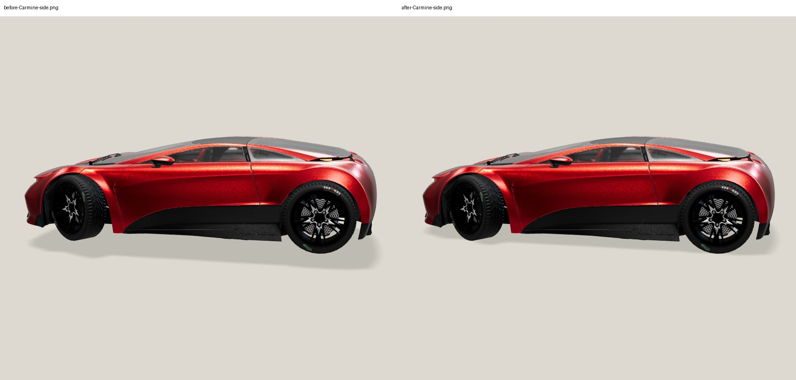
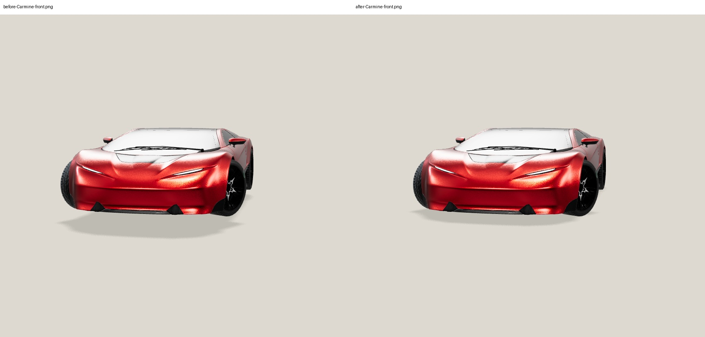
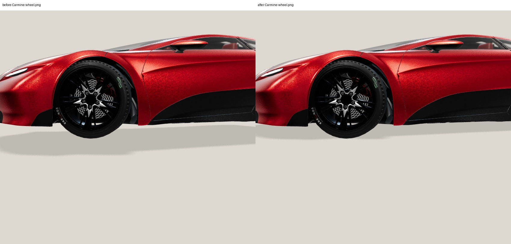
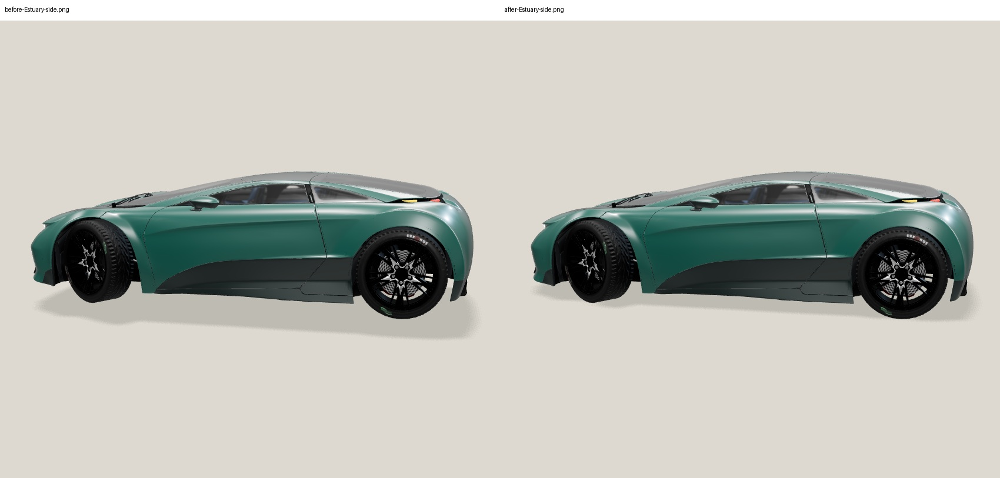
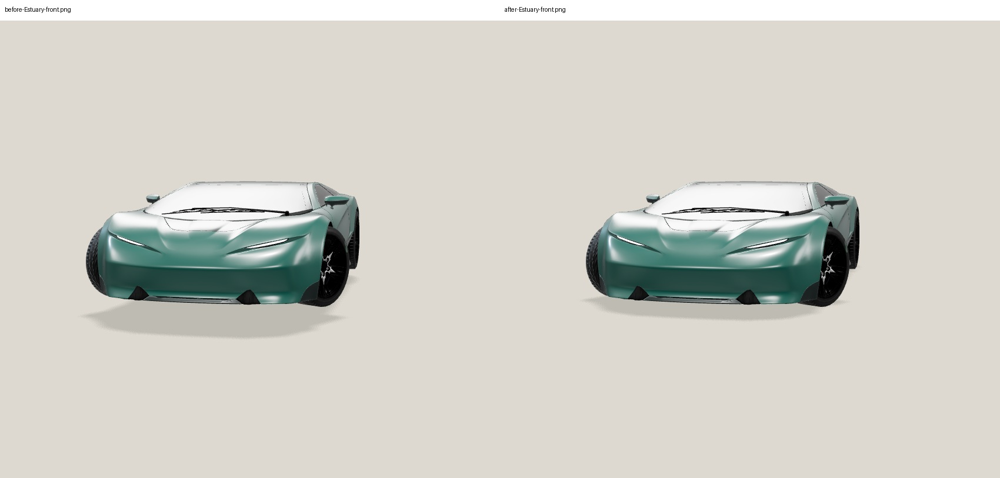
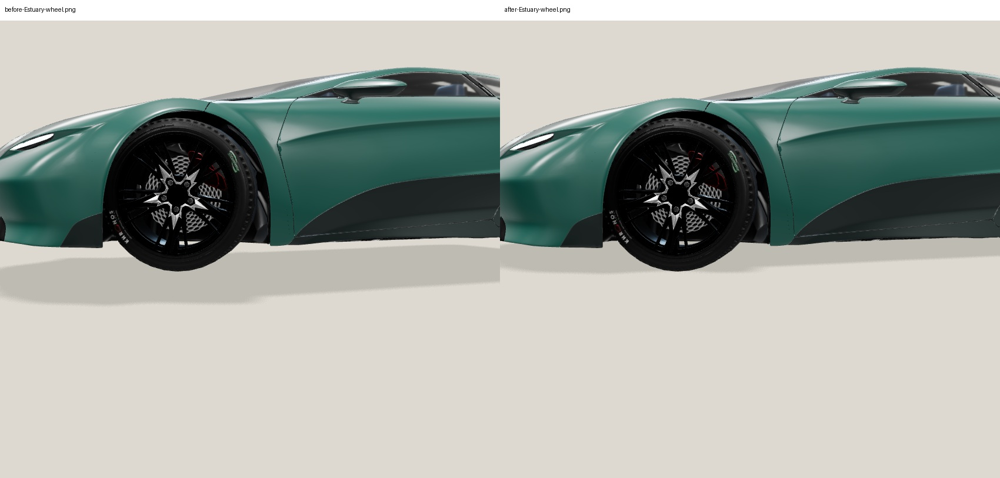
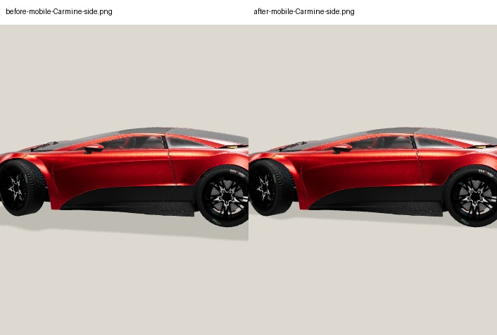

Left: frozen selected lighting before grounding correction. Right: identical lighting, receiver fitted to actual transformed vertices. Native app framebuffers (not DOM screenshots); 500 ms render pacing, SwiftShader, DPR 1. Fixed research cameras only. Human approval pending.






